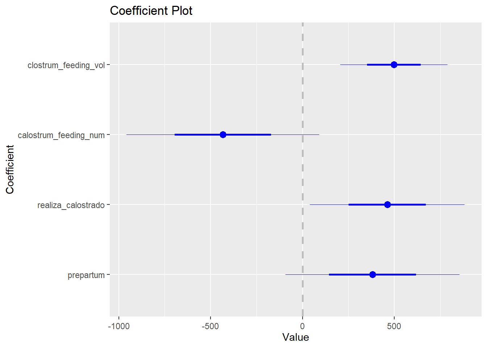
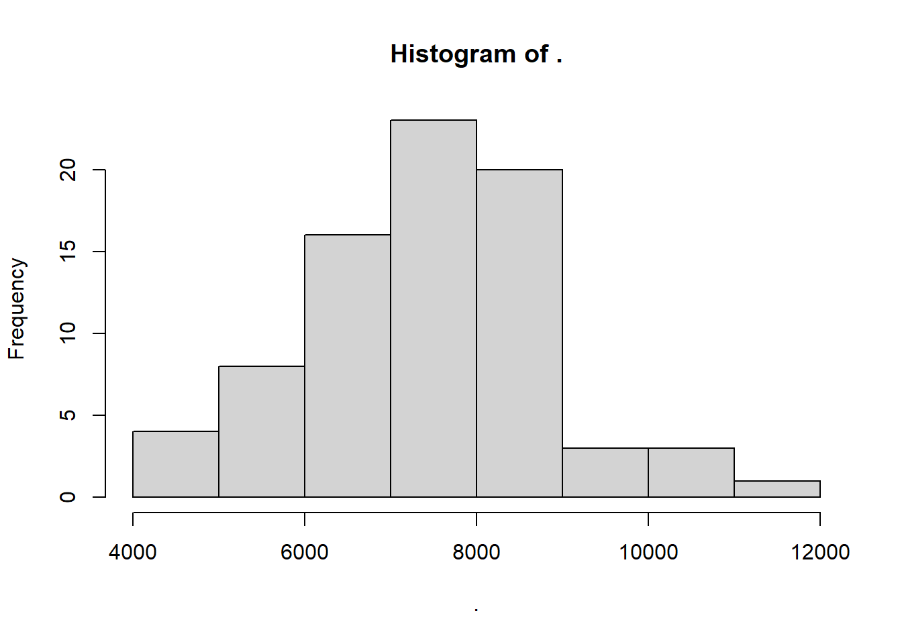
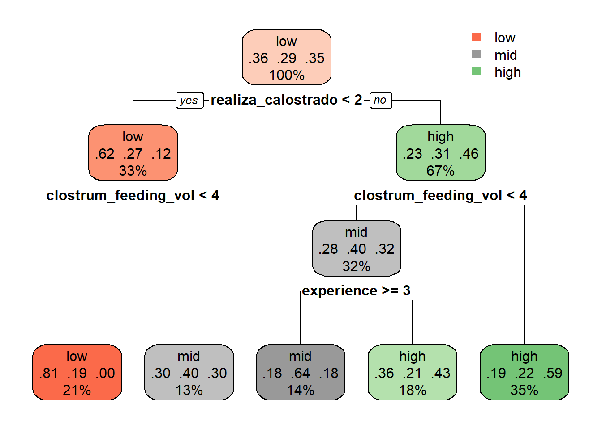
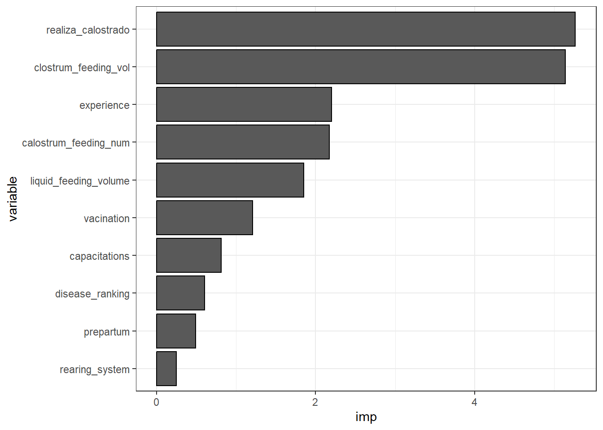

[conflicted] Will prefer dplyr::select over any other package.
[conflicted] Will prefer dplyr::filter over any other package.Milk yield
| Name | Piped data |
| Number of rows | 78 |
| Number of columns | 12 |
| _______________________ | |
| Column type frequency: | |
| numeric | 12 |
| ________________________ | |
| Group variables | None |
Variable type: numeric
| skim_variable | n_missing | complete_rate | mean | sd | p0 | p25 | p50 | p75 | p100 | hist |
|---|---|---|---|---|---|---|---|---|---|---|
| vacination | 0 | 1 | 2.53 | 0.60 | 1 | 2 | 3 | 3 | 3.0 | ▁▁▅▁▇ |
| prepartum | 0 | 1 | 2.36 | 0.62 | 1 | 2 | 2 | 3 | 3.0 | ▁▁▇▁▇ |
| experience | 0 | 1 | 3.09 | 1.06 | 1 | 2 | 4 | 4 | 4.0 | ▁▅▁▂▇ |
| capacitations | 0 | 1 | 1.59 | 0.76 | 1 | 1 | 1 | 2 | 3.0 | ▇▁▃▁▂ |
| rearing_system | 0 | 1 | 1.87 | 0.47 | 1 | 2 | 2 | 2 | 2.5 | ▂▁▁▇▂ |
| realiza_calostrado | 0 | 1 | 1.83 | 0.69 | 1 | 1 | 2 | 2 | 3.0 | ▅▁▇▁▂ |
| calostrum_feeding_num | 0 | 1 | 1.58 | 0.66 | 1 | 1 | 1 | 2 | 3.0 | ▇▁▆▁▂ |
| clostrum_feeding_vol | 0 | 1 | 3.29 | 1.15 | 1 | 2 | 3 | 4 | 5.0 | ▂▅▆▇▃ |
| liquid_feeding_volume | 0 | 1 | 2.38 | 0.52 | 1 | 2 | 2 | 3 | 3.0 | ▁▁▇▁▆ |
| hygiene | 0 | 1 | 2.26 | 0.75 | 1 | 2 | 2 | 3 | 3.0 | ▃▁▇▁▇ |
| disease_ranking | 0 | 1 | 1.85 | 1.35 | 1 | 1 | 1 | 3 | 5.0 | ▇▁▁▁▁ |
| milk_yield | 0 | 1 | 7529.21 | 1396.21 | 4300 | 6850 | 7625 | 8235 | 11590.0 | ▂▅▇▁▁ |
Reg lineal multiple
Call:
lm(formula = milk_yield ~ ., data = dat_milk)
Residuals:
Min 1Q Median 3Q Max
-3220.1 -717.4 56.8 647.1 3261.7
Coefficients:
Estimate Std. Error t value Pr(>|t|)
(Intercept) 3275.00 1315.79 2.489 0.0153 *
vacination 278.00 274.94 1.011 0.3157
prepartum 333.38 272.40 1.224 0.2254
experience 177.37 149.39 1.187 0.2394
capacitations 19.84 223.31 0.089 0.9295
rearing_system 217.70 319.71 0.681 0.4983
realiza_calostrado 400.32 229.91 1.741 0.0863 .
calostrum_feeding_num -409.98 296.86 -1.381 0.1719
clostrum_feeding_vol 387.25 181.78 2.130 0.0369 *
liquid_feeding_volume -202.14 326.12 -0.620 0.5375
hygiene 265.01 211.65 1.252 0.2150
disease_ranking 162.87 126.99 1.283 0.2042
---
Signif. codes: 0 '***' 0.001 '**' 0.01 '*' 0.05 '.' 0.1 ' ' 1
Residual standard error: 1261 on 66 degrees of freedom
Multiple R-squared: 0.3004, Adjusted R-squared: 0.1839
F-statistic: 2.577 on 11 and 66 DF, p-value: 0.008761Start: AIC=1124.8
milk_yield ~ vacination + prepartum + experience + capacitations +
rearing_system + realiza_calostrado + calostrum_feeding_num +
clostrum_feeding_vol + liquid_feeding_volume + hygiene +
disease_ranking
Df Sum of Sq RSS AIC
- capacitations 1 12559 105018101 1122.8
- liquid_feeding_volume 1 611234 105616775 1123.2
- rearing_system 1 737716 105743258 1123.3
- vacination 1 1626508 106632049 1124.0
- experience 1 2242794 107248336 1124.5
- prepartum 1 2383057 107388599 1124.5
- hygiene 1 2494312 107499853 1124.6
- disease_ranking 1 2616912 107622454 1124.7
<none> 105005541 1124.8
- calostrum_feeding_num 1 3034435 108039977 1125.0
- realiza_calostrado 1 4823412 109828954 1126.3
- clostrum_feeding_vol 1 7220550 112226092 1128.0
Step: AIC=1122.81
milk_yield ~ vacination + prepartum + experience + rearing_system +
realiza_calostrado + calostrum_feeding_num + clostrum_feeding_vol +
liquid_feeding_volume + hygiene + disease_ranking
Df Sum of Sq RSS AIC
- liquid_feeding_volume 1 699905 105718006 1121.3
- rearing_system 1 727168 105745269 1121.3
- vacination 1 1766274 106784375 1122.1
- experience 1 2237497 107255598 1122.5
- prepartum 1 2484529 107502630 1122.6
- hygiene 1 2595646 107613747 1122.7
- disease_ranking 1 2604829 107622930 1122.7
<none> 105018101 1122.8
- calostrum_feeding_num 1 3255461 108273562 1123.2
- realiza_calostrado 1 4889975 109908076 1124.4
+ capacitations 1 12559 105005541 1124.8
- clostrum_feeding_vol 1 8276187 113294288 1126.7
Step: AIC=1121.33
milk_yield ~ vacination + prepartum + experience + rearing_system +
realiza_calostrado + calostrum_feeding_num + clostrum_feeding_vol +
hygiene + disease_ranking
Df Sum of Sq RSS AIC
- rearing_system 1 784161 106502167 1119.9
- vacination 1 1694953 107412959 1120.6
- experience 1 1867001 107585007 1120.7
- prepartum 1 2315448 108033454 1121.0
- disease_ranking 1 2358066 108076072 1121.0
<none> 105718006 1121.3
- hygiene 1 2752536 108470542 1121.3
- calostrum_feeding_num 1 2844739 108562745 1121.4
+ liquid_feeding_volume 1 699905 105018101 1122.8
- realiza_calostrado 1 5096961 110814967 1123.0
+ capacitations 1 101231 105616775 1123.2
- clostrum_feeding_vol 1 7596928 113314934 1124.7
Step: AIC=1119.9
milk_yield ~ vacination + prepartum + experience + realiza_calostrado +
calostrum_feeding_num + clostrum_feeding_vol + hygiene +
disease_ranking
Df Sum of Sq RSS AIC
- vacination 1 1791084 108293251 1119.2
- experience 1 2011040 108513208 1119.4
- disease_ranking 1 2056156 108558324 1119.4
- hygiene 1 2594079 109096246 1119.8
<none> 106502167 1119.9
- calostrum_feeding_num 1 2830582 109332749 1120.0
- prepartum 1 2979702 109481870 1120.1
+ rearing_system 1 784161 105718006 1121.3
+ liquid_feeding_volume 1 756899 105745269 1121.3
- realiza_calostrado 1 5379588 111881756 1121.8
+ capacitations 1 66892 106435275 1121.8
- clostrum_feeding_vol 1 7929065 114431233 1123.5
Step: AIC=1119.2
milk_yield ~ prepartum + experience + realiza_calostrado + calostrum_feeding_num +
clostrum_feeding_vol + hygiene + disease_ranking
Df Sum of Sq RSS AIC
- experience 1 1385520 109678771 1118.2
- disease_ranking 1 1837138 110130389 1118.5
- hygiene 1 2565360 110858611 1119.0
<none> 108293251 1119.2
- prepartum 1 3059712 111352963 1119.4
- calostrum_feeding_num 1 3525259 111818510 1119.7
+ vacination 1 1791084 106502167 1119.9
+ rearing_system 1 880292 107412959 1120.6
+ liquid_feeding_volume 1 684078 107609173 1120.7
+ capacitations 1 263913 108029338 1121.0
- realiza_calostrado 1 8225456 116518707 1122.9
- clostrum_feeding_vol 1 9433753 117727005 1123.7
Step: AIC=1118.2
milk_yield ~ prepartum + realiza_calostrado + calostrum_feeding_num +
clostrum_feeding_vol + hygiene + disease_ranking
Df Sum of Sq RSS AIC
- disease_ranking 1 1866408 111545178 1117.5
- hygiene 1 2152179 111830950 1117.7
<none> 109678771 1118.2
- prepartum 1 3591050 113269821 1118.7
- calostrum_feeding_num 1 3774778 113453548 1118.8
+ experience 1 1385520 108293251 1119.2
+ vacination 1 1165563 108513208 1119.4
+ rearing_system 1 989562 108689209 1119.5
+ liquid_feeding_volume 1 366169 109312602 1119.9
+ capacitations 1 148762 109530009 1120.1
- realiza_calostrado 1 7346582 117025353 1121.2
- clostrum_feeding_vol 1 11714468 121393239 1124.1
Step: AIC=1117.51
milk_yield ~ prepartum + realiza_calostrado + calostrum_feeding_num +
clostrum_feeding_vol + hygiene
Df Sum of Sq RSS AIC
- hygiene 1 2078938 113624117 1117.0
- prepartum 1 2383613 113928792 1117.2
- calostrum_feeding_num 1 2704696 114249874 1117.4
<none> 111545178 1117.5
+ disease_ranking 1 1866408 109678771 1118.2
+ experience 1 1414789 110130389 1118.5
+ vacination 1 988201 110556977 1118.8
+ rearing_system 1 653854 110891324 1119.0
+ liquid_feeding_volume 1 207028 111338150 1119.4
+ capacitations 1 55170 111490009 1119.5
- realiza_calostrado 1 6809359 118354538 1120.1
- clostrum_feeding_vol 1 15343045 126888224 1125.6
Step: AIC=1116.95
milk_yield ~ prepartum + realiza_calostrado + calostrum_feeding_num +
clostrum_feeding_vol
Df Sum of Sq RSS AIC
<none> 113624117 1117.0
+ hygiene 1 2078938 111545178 1117.5
- prepartum 1 4034245 117658361 1117.7
+ disease_ranking 1 1793167 111830950 1117.7
- calostrum_feeding_num 1 4229424 117853541 1117.8
+ vacination 1 1043481 112580636 1118.2
+ experience 1 1002360 112621757 1118.3
+ rearing_system 1 516087 113108030 1118.6
+ liquid_feeding_volume 1 316657 113307459 1118.7
+ capacitations 1 218262 113405855 1118.8
- realiza_calostrado 1 7457381 121081498 1119.9
- clostrum_feeding_vol 1 18099121 131723238 1126.5
Call:
lm(formula = milk_yield ~ prepartum + realiza_calostrado + calostrum_feeding_num +
clostrum_feeding_vol, data = dat_milk)
Residuals:
Min 1Q Median 3Q Max
-2572.1 -980.3 -20.9 706.9 3571.6
Coefficients:
Estimate Std. Error t value Pr(>|t|)
(Intercept) 4826.7 741.2 6.512 8.26e-09 ***
prepartum 381.4 236.9 1.610 0.11173
realiza_calostrado 461.4 210.8 2.189 0.03181 *
calostrum_feeding_num -432.6 262.4 -1.648 0.10356
clostrum_feeding_vol 497.5 145.9 3.410 0.00106 **
---
Signif. codes: 0 '***' 0.001 '**' 0.01 '*' 0.05 '.' 0.1 ' ' 1
Residual standard error: 1248 on 73 degrees of freedom
Multiple R-squared: 0.243, Adjusted R-squared: 0.2015
F-statistic: 5.859 on 4 and 73 DF, p-value: 0.0003809
En este grafico podemos ver todas las variables que tienen efecto sobre milk_yield aumentan (segun el modelo solo la alimentacion de las vacas tiene efecto y hay tendencia en el volumen de calostro).
- Importancia relativa
Analizo la importancia relativa de las variables presentes en el modelo
Response variable: milk_yield
Total response variance: 1949393
Analysis based on 78 observations
4 Regressors:
prepartum realiza_calostrado calostrum_feeding_num clostrum_feeding_vol
Proportion of variance explained by model: 24.3%
Metrics are normalized to sum to 100% (rela=TRUE).
Relative importance metrics:
car
prepartum 0.14249080
realiza_calostrado 0.28153709
calostrum_feeding_num 0.03000684
clostrum_feeding_vol 0.54596527La alimentacion de las vacas explica el 40% de la produccion de leche, seguido del volumen de calostro que explica el 20%
Random forest

low mid high
4300 1 0 0
5000 3 0 0
5490 2 0 0
5500 4 0 0
5600 2 0 0
6100 2 0 0
6500 4 0 0
6710 1 0 0
6800 1 0 0
7000 8 0 0
7015 0 3 0
7320 0 1 0
7500 0 3 0
7590 0 1 0
7625 0 5 0
7700 0 1 0
7800 0 2 0
7890 0 1 0
7930 0 2 0
8000 0 4 0
8056 0 0 1
8127 0 0 1
8200 0 0 3
8235 0 0 4
8500 0 0 7
8540 0 0 1
8845 0 0 1
9000 0 0 2
9100 0 0 1
9760 0 0 1
9850 0 0 1
10200 0 0 1
10370 0 0 1
10980 0 0 1
11590 0 0 1 [1] "vacination" "prepartum" "experience"
[4] "capacitations" "rearing_system" "realiza_calostrado"
[7] "calostrum_feeding_num" "clostrum_feeding_vol" "liquid_feeding_volume"
[10] "hygiene" "disease_ranking" "milk_yield"
[13] "milk_yield_band" Arbol de clasificacion

- Histograma de importancia de las variables predictoras sobre mortalidad
